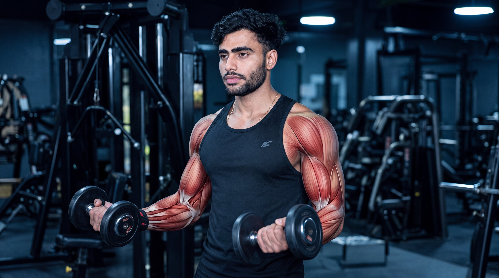
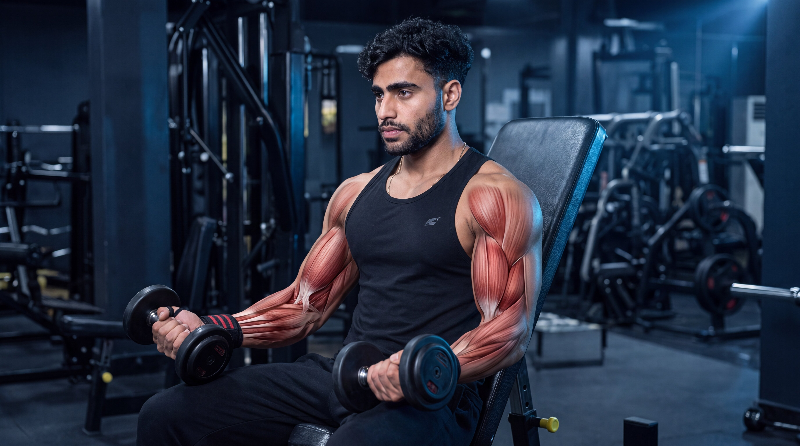

Beginner
Beginner
Barbell Curl
Build biceps strength and arm development with a classic bilateral curling movement using a barbell.
View ExerciseExplore step-by-step biceps exercise guides designed to help you master proper form, understand muscle activation, avoid common mistakes, and build arm strength with confidence.
Explore our biceps exercise library and learn proper technique, muscle activation, common mistakes, and practical coaching tips for every movement.
Beginner
Build biceps strength and arm development with a classic bilateral curling movement using a barbell.
View Exercise Beginner
Beginner
Train each arm independently while developing biceps strength, control, and balanced arm movement.
View Exercise Beginner
Beginner
Use a neutral grip to train the biceps, brachialis, and forearms while building overall arm strength.
View Exercise Intermediate
Intermediate
Support the upper arms on a preacher pad to reduce momentum and create a stricter curling movement.
View Exercise Intermediate
Intermediate
Curl from an inclined position with the arms behind the torso to challenge the biceps through a longer muscle length.
View Exercise Beginner
Beginner
Maintain continuous resistance through a controlled curling movement using a low cable pulley.
View Exercise Intermediate
Intermediate
Isolate one arm at a time with a supported upper-arm position for focused and controlled biceps training.
View Exercise Intermediate
Intermediate
Combine a supinated curl with a pronated lowering phase to train the biceps, brachialis, and forearms.
View ExerciseDifferent biceps exercises serve different purposes. Choose your movement based on whether you want to build overall curling strength, develop the brachialis and forearms, isolate the biceps with stricter control, or train through stretched positions and continuous tension.
Focus on foundational curling movements that allow progressive overload while developing biceps strength, arm control, and balanced muscular development.
Use neutral-grip and rotational curl variations to challenge the brachialis, biceps, and forearms while developing greater overall arm strength and thickness.
Choose supported curling movements when you want to reduce momentum, stabilize the upper arm, and focus on controlled elbow flexion throughout each repetition.
Use stretched-position and cable-based movements to challenge the biceps through different resistance profiles while maintaining deliberate control through every phase of the repetition.
Go beyond the surface. Explore cinematic anatomy videos that reveal how your biceps, elbows, forearms, and movement mechanics work during every repetition.
Watch what happens beneath the skin as the biceps, brachialis, forearms, and elbow joint coordinate through every phase of the barbell curl.
See how the biceps and supporting arm muscles contribute throughout the repetition.
Understand how the elbows, forearms, and upper arms coordinate during the curl.
Connect anatomy with better curling execution and controlled arm movement.
Select an exercise to explore its cinematic under-the-skin breakdown.

Hindi
HindiBuilding stronger biceps is not only about curling heavier weights. Exercise selection, grip position, controlled movement, and consistent progression all shape long-term strength and muscular development.
Master the fundamentals first. Then make every repetition more purposeful.
Supinated, neutral, and rotational curl variations challenge the biceps, brachialis, and forearms in different ways. Choose movements strategically to support balanced arm development.
Control each repetition by keeping your upper arms relatively stable and allowing the elbows to flex naturally. Avoid excessive swinging, leaning, or momentum simply to move more weight.
Progress does not always mean adding more weight. More controlled repetitions, improved technique, greater range of motion, or gradual load increases can all represent meaningful progress.
Stronger-looking arms depend on more than the biceps alone. Include movements that also challenge the brachialis and forearms, while balancing your program with appropriate triceps training.
Get clear, practical answers to common questions about biceps exercises, training frequency, technique, grip selection, and balanced arm development.
For many people, around two to four biceps exercises in a workout can be enough, depending on training experience, weekly frequency, exercise selection, and total training volume. Focus on controlled, purposeful movements rather than adding exercises simply for the sake of doing more.
Many people train their biceps one to three times per week depending on their program, experience, recovery, and total weekly volume. Remember that the biceps also contribute during many back and pulling exercises, so consider your entire training program when planning direct biceps work.
All three can be useful. Barbells allow both arms to work together, dumbbells let each arm move independently, and cables provide continuous resistance through different parts of the curl. Choose movements that match your goals, equipment, comfort, and ability to maintain controlled technique.
The forearms naturally contribute to gripping and curling movements, especially during neutral or pronated grip variations. Excessive wrist bending, gripping too aggressively, or using more weight than you can control may make forearm involvement more noticeable. Keep your wrists stable and use a manageable load.
Hammer curls are not mandatory, but they can be a useful addition because the neutral grip trains the biceps alongside the brachialis and brachioradialis. Including different grip positions can add useful variety and support more complete arm development.
Use a load that allows controlled repetitions through a comfortable range of motion. Adding weight can support progression, but excessive swinging, leaning, or momentum can change the movement and reduce consistency. Prioritize repeatable technique while progressing gradually over time.
Training needs vary between individuals. Choose exercises and training volume that match your experience, goals, recovery, and comfort.
Strength is built through balanced training. Explore more muscle groups, discover new exercises, and keep building your knowledge one movement at a time.